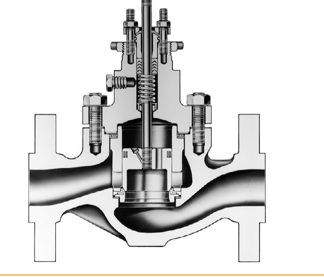

Cage-Guided Construction

1 2 3- 1Cage — holds the plug OD in close alignment through its full travel; also retains the seat ring and characterizes the flow
- 2Valve plug — balanced design equalizes downstream pressure across both faces, permitting a smaller actuator than an unbalanced valve of similar capacity
- 3Seat ring — soft (non-metal) seat shown here
After Control Valve Handbook, 6th ed., Fig. 3.4 — used directly. Component Index: cvh-cmp-cage-style-trim-balanced-plug-soft-seat.